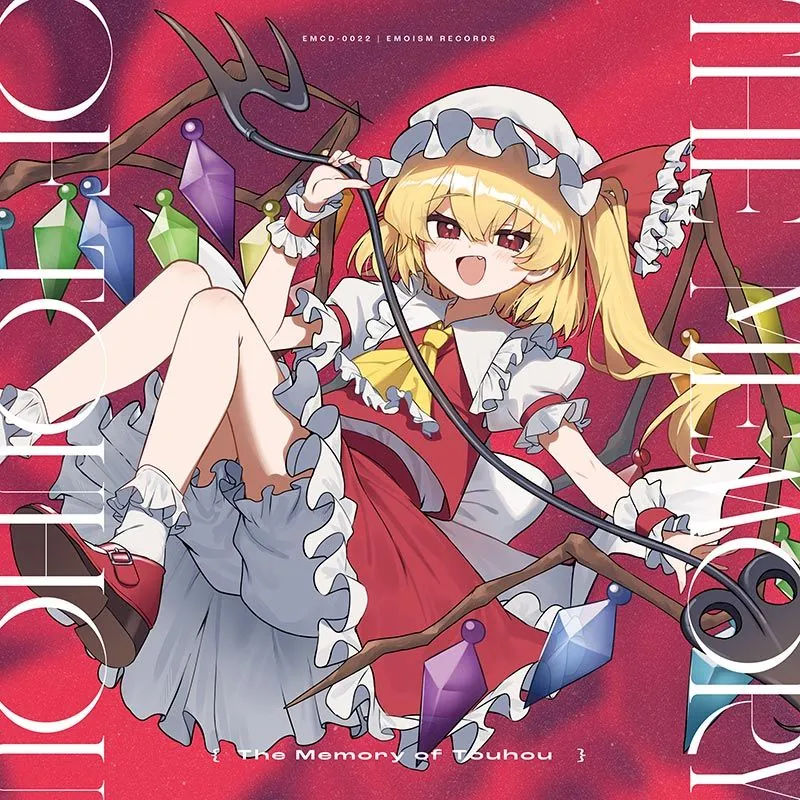
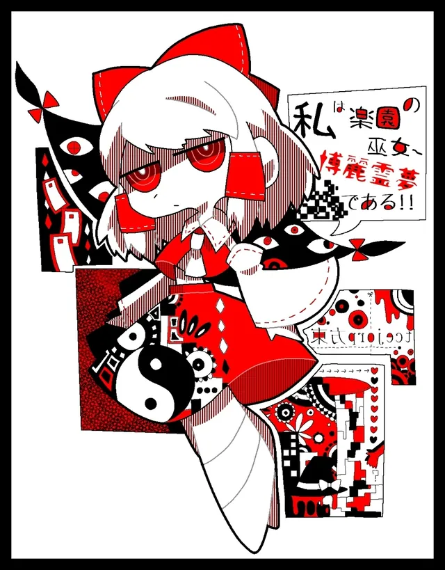
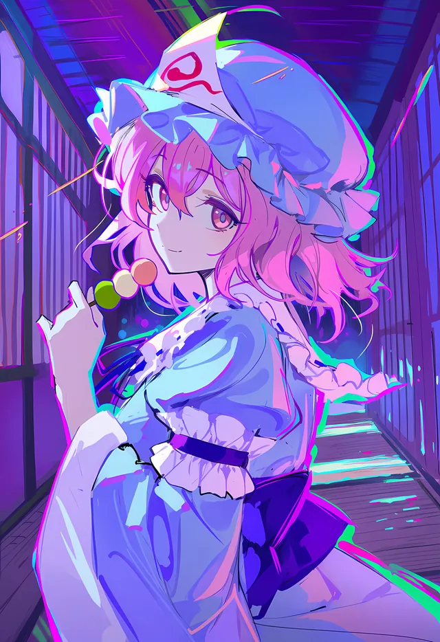

↩
撤销订单
再想想
确认撤销
正在连接…

GENSOKYO · DREAM PORTAL
Rice
yukiom.us.ci
CHARACTERS
左右滑动

博丽灵梦
琪露诺
雾雨魔理沙

西行寺幽幽子
🍱
点饭
系统
今天想吃什么呀 ～
👤
你的名字
🍽️
想吃什么呢
随机
全部 13 项
✨ 提交订单
📊
实时汇总
复制
餐品
数量
小计
加载中…
合计
¥0
📋
点单记录
🍱
加载中…